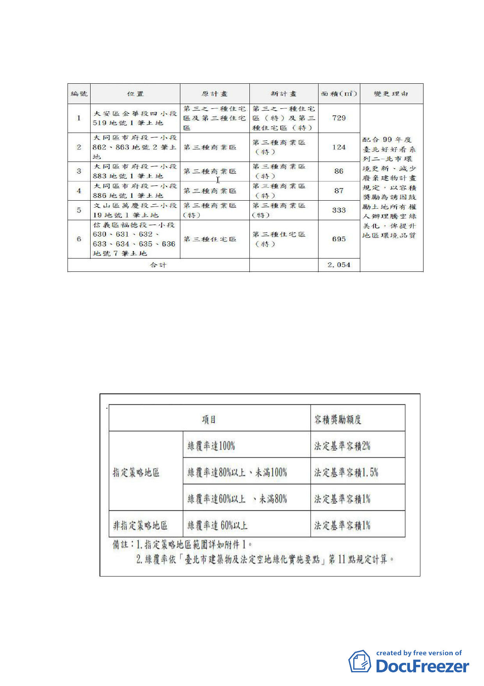

（一）使用分區變更
（二）土地使用分區管制－增訂容積獎勵規定
為鼓勵計畫範圍內基地騰空綠美化，給予容積獎勵，並依
基地綠覆率及區位給予不同比例之奬勵額度。申請本容積
獎勵者，土地所有權人應負維護管理之義務至新建建物前
（維持期程至少至 100 年 12 月 31 日止）；管理維護期程
未達 100 年 12 月 31 日，不予容積獎勵。
五、本案係市府以 100 年 8 月 3 日府都規字第 10033855503 號
函送到會，自 100 年 8 月 4 日起公開展覽 30 日。
-5-